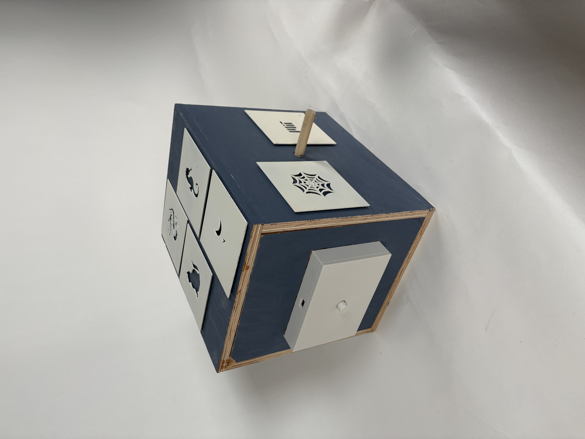
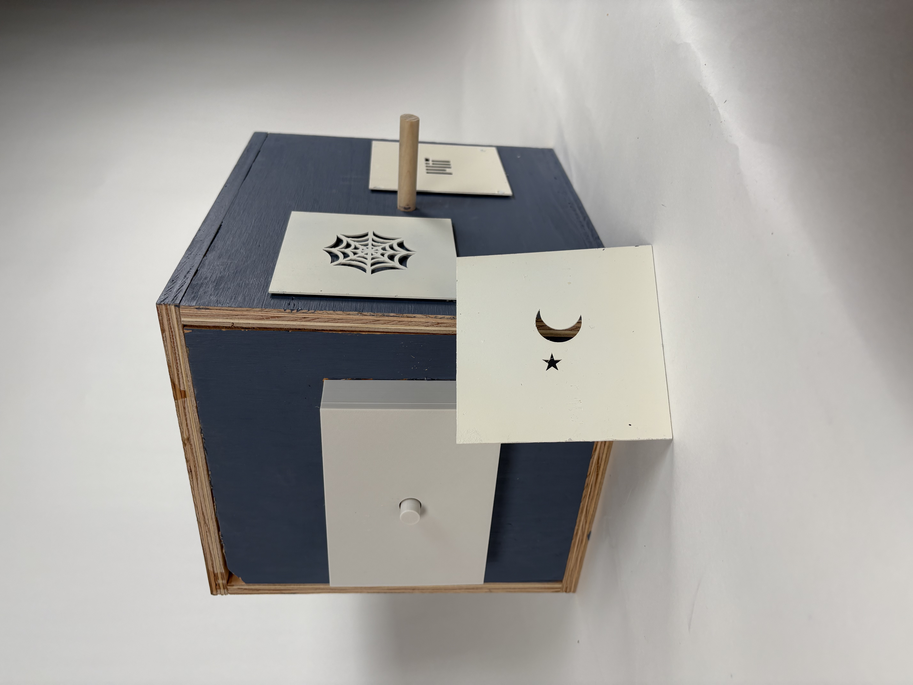
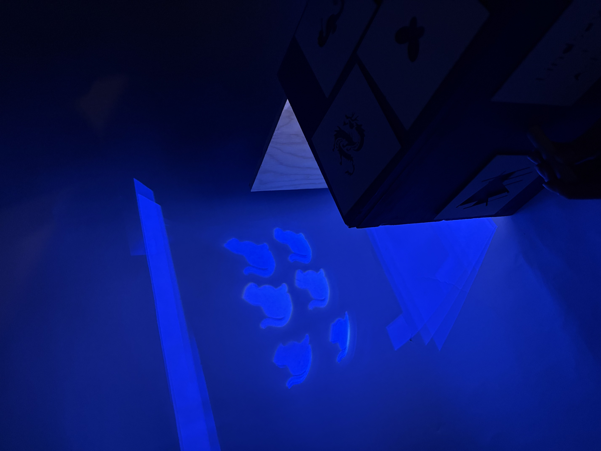
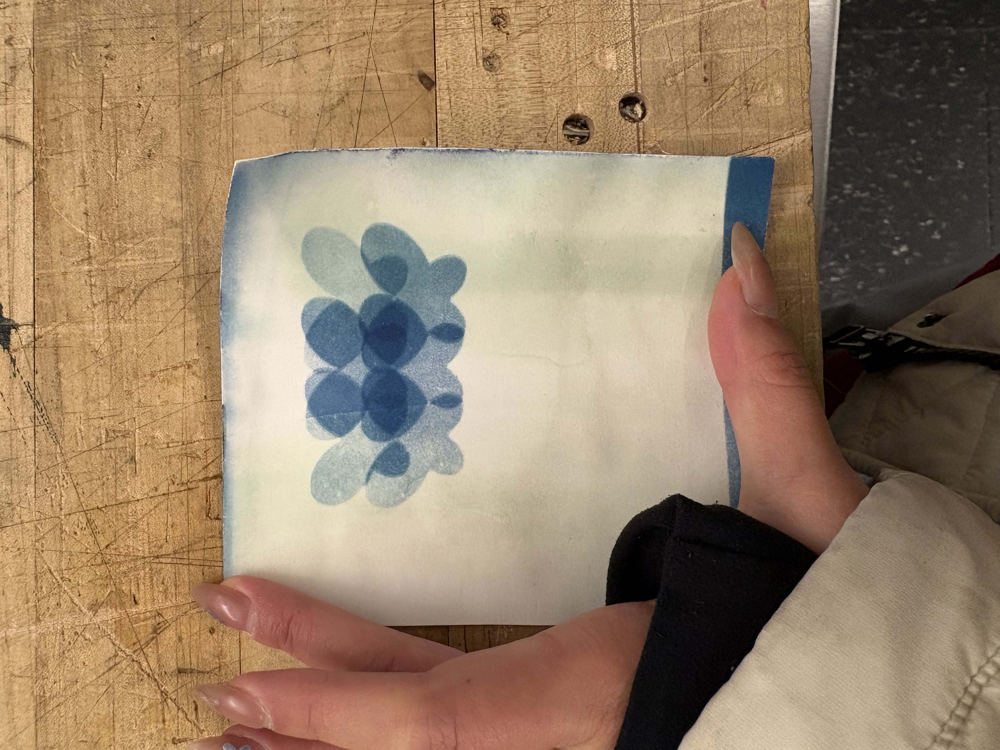

Inspiration
While playing around with our materials, we noticed that shining the light through the lens and then turning the lens produced a really cool distorted shape.
Design
Redesigning the pinhole camera
This camera thinks back on the history of photography and the camera. The original camera uses the concept of a pinhole and a dark box. Taking this concept, and a way to capture the image (cyanotype and an artificial UV source) my partner Ashley and I created PRO-ject. This camera uses a lens and a UV LED lamp with six point lights, producing a printed image 6 fold.
While playing around with our materials, we noticed that shining the light through the lens and then turning the lens produced a really cool distorted shape.
The housing was then designed around how a user would be able to use the camera. We wanted a door that could open so the light could shine onto larger materials, but also a way for photosensitive paper to be attached to the inside of the box. The handles were placed on the outside of the camera housing so a user could interact with it easily, and attached to a simple gear/stopper mechanism so the lens angle could be fixed.
I love the concept of this camera, but if I were to do it again, I would design the housing a bit differently. I would probably have dials on the outside, as well as scale down the size of the box. Other ideas could be a gyroscope for the light source, and the lens could be fixed in position with the housing.



